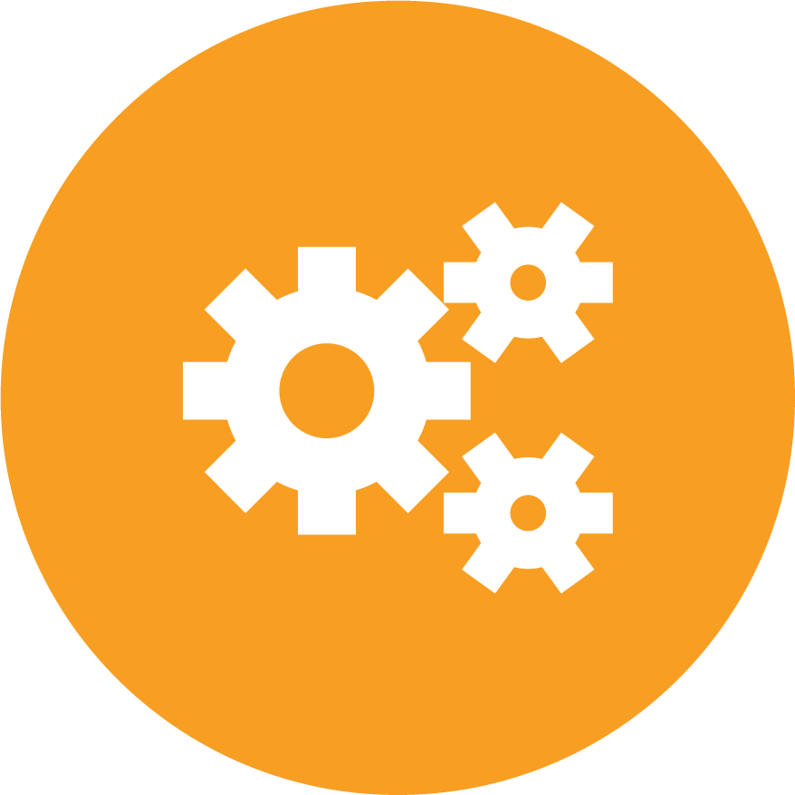
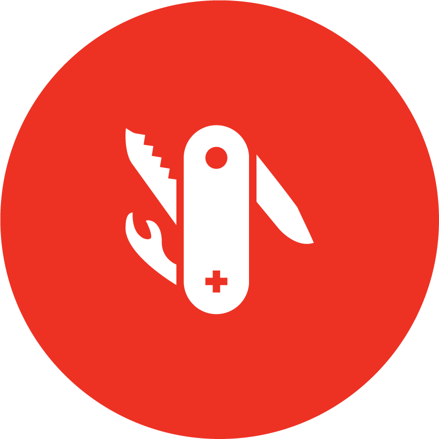
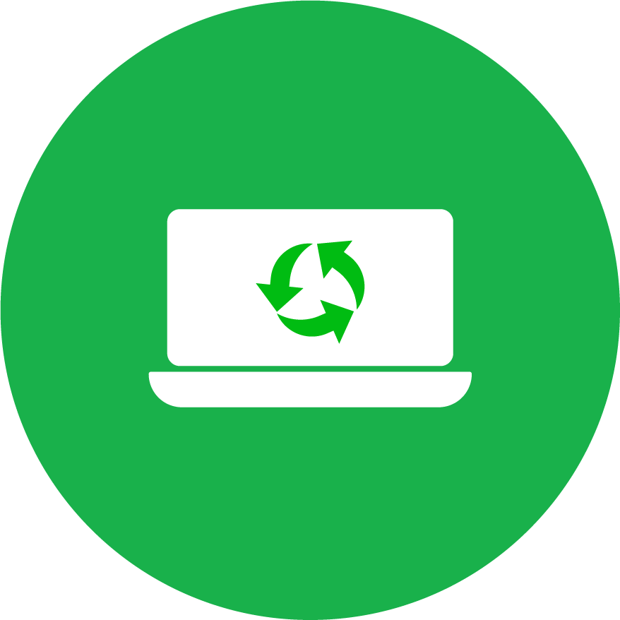

Automated inspection
Fully automated inspection and quality control for packaged goods lines.
AI inspection as a service
Greyscale AI combines high-resolution x-ray imaging, advanced AI, and cloud analytics for smarter food safety, product quality, and production insight.
Safer and smarter inspection
The Greyscale AI solution pairs x-ray inspection machines with automated image capture, AI-assisted analysis, and production data that can be monitored beyond the line.

Inspection systems
The current site presents five Greyscale AI x-ray systems. This static rebuild keeps those product images available while the product detail structure is refined.


Capabilities

Fully automated inspection and quality control for packaged goods lines.
Capture food safety, quality, and OEE production data at machine speed.

Combine foreign material detection, product grading, and check weighing.

Support remote monitoring, over-the-air software updates, and reporting.

Partner with Greyscale
From proteins and produce to beverages, dairy, pet food, seafood, and pharmaceutical applications, Greyscale AI is focused on safer products, better yields, and richer operational visibility.